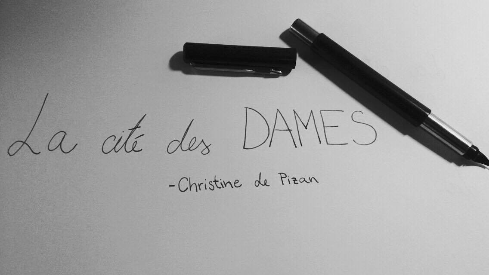

V srednjem veku so ženske veljale za prešuštnice, s katerimi je imeti čim manj opravka in od katerih morajo moški bežati.
V renesansi so si zastavljali vprašanje: ali je ženska človeško bitje? Italijanska renesansa je v nasprotju s Srednjim vekom, ki ni naklonjen ženskam, obdobje razvijajočega se individualizma, ki se izkaže za naklonjeno razcvetu vseh možnih osebnosti ne glede na spol (de Beauvoir, 1999: 150-153). Takrat med drugim nastane tudi delo Mesto dam avtorice Christine de Pizan.
